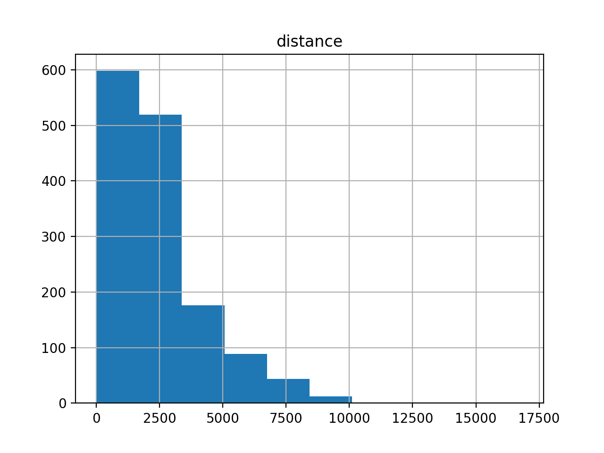
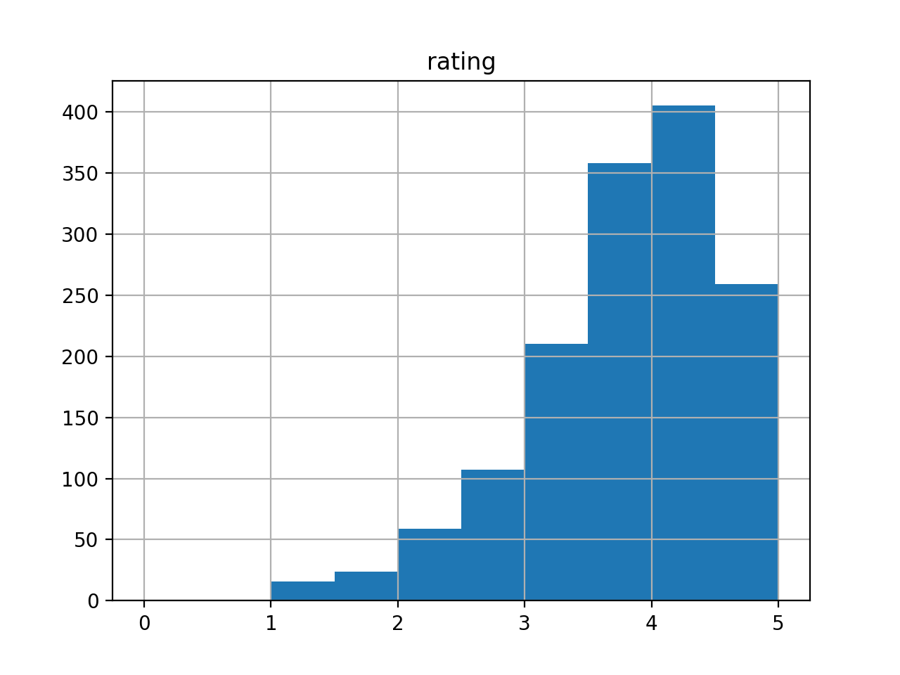
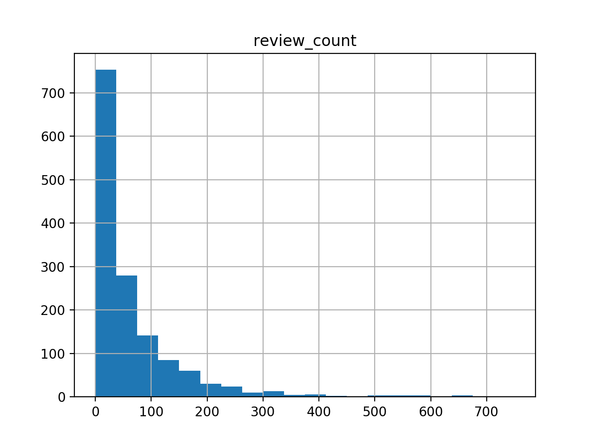

Complete data spec describing our collected data
https://github.com/wzg21/cs1951a_final_project/blob/master/README.md
Links to our full data in downloadable form
https://github.com/wzg21/cs1951a_final_project/blob/master/businesses.csv
https://github.com/wzg21/cs1951a_final_project/blob/master/reviews.csv
Samples of our data
https://github.com/wzg21/cs1951a_final_project/blob/master/businesses_sample.csv
https://github.com/wzg21/cs1951a_final_project/blob/master/reviews_sample.csv
Concise tech report
We proposed to predict the rating of a restaurant given a restaurant's location information (street, city, state, zipcode), category (categories), price level, review count, and transaction types(reservation, pickup, delivery).
How did you collect your data?
Our data is from Yelp's website, we made use of Yelp's API to collect our data, we collected two types of data:
The information of all restaurants in different regions, collected by Yelp's
business search API.
The reviews of all restaurants we collected, collected by Yelp's
business reviews API. For each restaurant there are up to 3 reviews.
When using Yelp's business search API to request restaurants' data, a location parameter is required for each request to indicate the geographic area to be used when searching, and for each location, we can get up to 1000 restaurants due to Yelp's limitation, which means what we choose as the location parameter is very important. Our approach is to use zip code as the location parameter, i.e. for each zip code region we requested for up to 1000 restaurants, then we join all the results together and remove all duplicate and invalid data points to get our final dataset.
Is the source reputable?
Yes, Yelp is a reliable source and we use its official APIs to collect data.
How did you generate the sample? Is it comparably small or large? Is it representative or is it likely to exhibit some kind of sampling bias?
We generated the samples by randomly selecting 10 rows each from businesses and reviews data, the sample is comparably small. There shouldn’t be sampling bias since randomly choosing.
How many data points are there total? How many are there in each group you care about (e.g. if you are dividing your data into positive/negative examples, are they split evenly)? Do you think this is enough data to do what you hope to do?
For now we have collected 2482 restaurants within Rhode Island and 7167 reviews of them. These are pretty much all available restaurants in Rhode Island on Yelp. The data is enough for the prediction goal 'How can I predict the rating of a restaurant in Rhode Island?'.
In the future, we plan to collect more restaurant data points in other cities, states and regions in the US using the same code.
Are there missing values? Do these occur in fields that are important for your project's goals?
We proposed to predict the rating of a restaurant given a restaurant's location information (street, city, state, zipcode), category (categories), price level, review count, and transaction types(reservation, pickup, delivery). There is no missing value in all the independent variables and the dependent variable. However, there are missing values in other fields such as image_url, address 2, address 3 - which are less important fields.
Are there duplicates? Do these occur in fields that are important for your project's goals?
There are duplicates in the raw data, but we have cleaned it up so there is no duplicate in our final dataset.
How is the data distributed? Is it uniform or skewed? Are there outliers? What are the min/max values? (focus on the fields that are most relevant to your project goals)
We study the distributions of review counts, rating and distance. These are the numerical variables that we believe have certain correlation with our target.
The distribution of distance is skewed right. We find out that the majority of our restaurant are collected near our zipcode we query. Yelp still returns some restaurants that are not within the region we queried, thus some data tend to have further distances. The maximum value is 16.8 km from the search location. Since the average distance is about 2.5 km, Based on the Interquartile Range Rule, we identify the maximum value being an outlier.
The distribution of rating is skewed left. The average rating of all the restaurants we’ve collected is 3.57. Since the rating ranges from 0.0 to 5.0, there is no outlier identified.
The distribution of the number of reviews is also skewed right. From the plot, we can see that the number of reviews the majority of the restaurants have is less than 100. The minimum value is 0, while the maximum is 1639. Since the first quartile is 13 and the third quartile is 82, by using the Interquartile Range Rule we know those values larger than 185.5 could be suspected outliers. However, the data is skewed right because lots of restaurants are relatively new, the restaurants with reviews more than 185.5 will not be removed for now.



Are there any data type issues (e.g. words in fields that were supposed to be numeric)? Where are these coming from? (E.g. a bug in your scraper? User input?) How will you fix them?
There is no data type issue. Our dataset is in CSV format where all fields are strings.
Do you need to throw any data away? What data? Why? Any reason this might affect the analyses you are able to run or the conclusions you are able to draw?
In the raw data, there were some restaurants that are not in a specific region (the zip code is incorrect) even though we had specified searching within that region in API requests, this happened because some of Yelp's data are incorrect at the beginning, we removed these restaurants in the cleanup phase.
Also, we have removed duplicates for our data so the size of our data has decreased and the records in business.csv and reviews.csv are more concise.
Summarize any challenges or observations you have made since collecting your data. Then, discuss your next steps and how your data collection has impacted the type of analysis you will perform. (approximately 3-5 sentences)
In our raw data, key formats are not always the same in different JSON files so we needed to add many restrictions to generate the right outputs.
We also noticed that there are a lot of missing values (almost 50%) in the price field which we initially planned to use as a dependent variable. Therefore, we decided to exclude price from our analysis for now until we figure out a better usage for it.